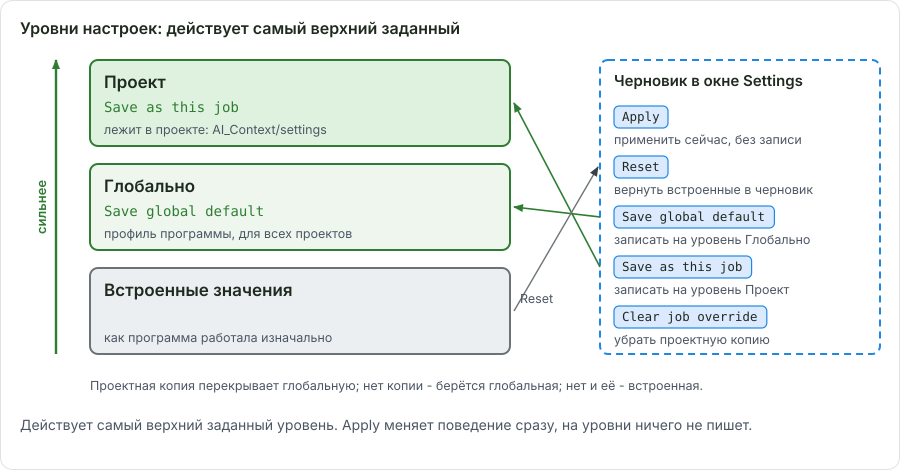
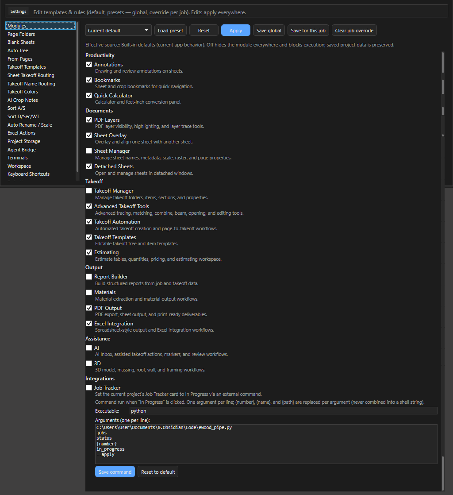
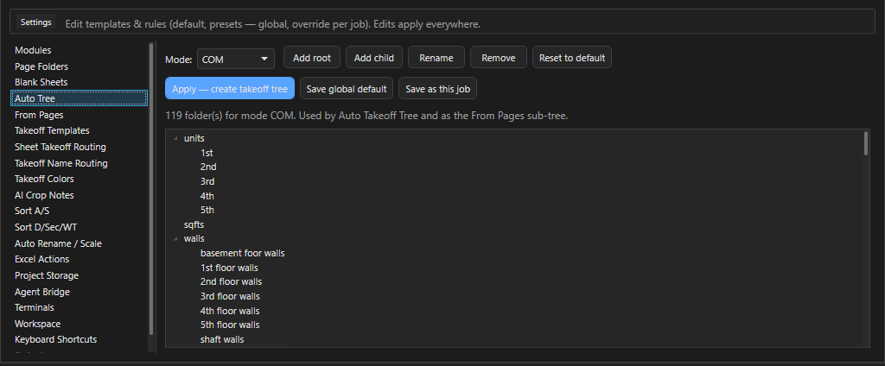
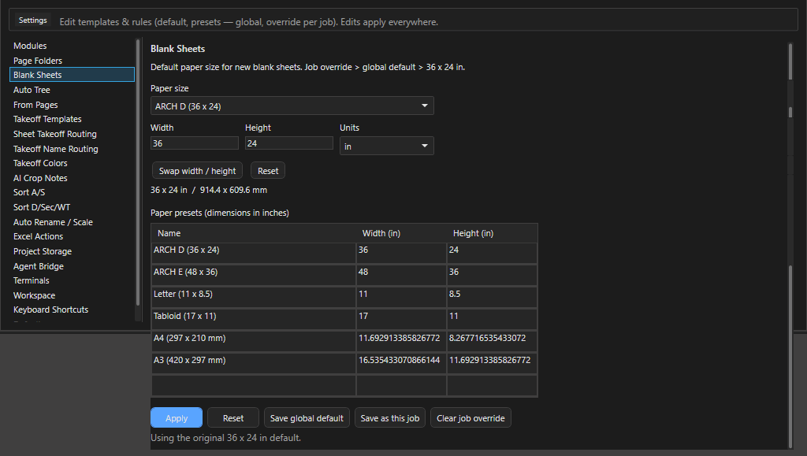
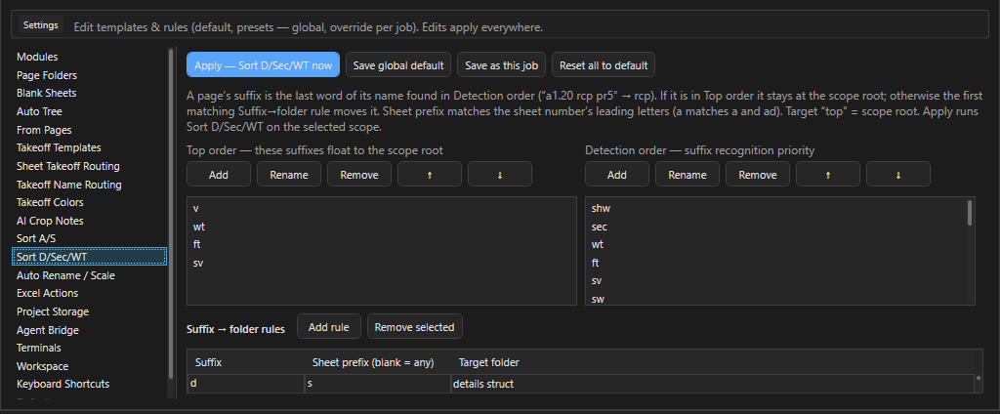
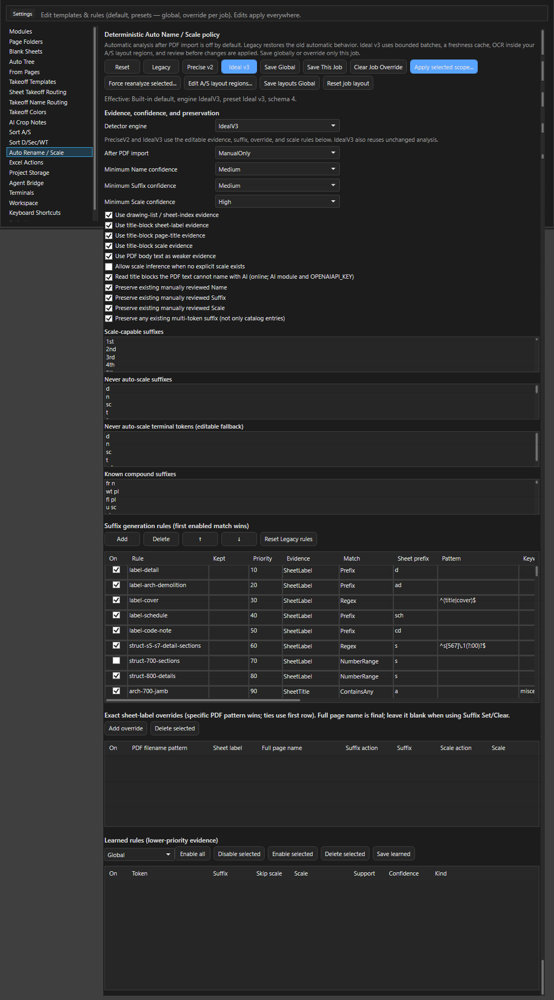
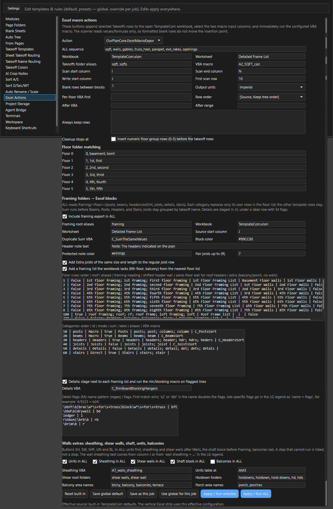
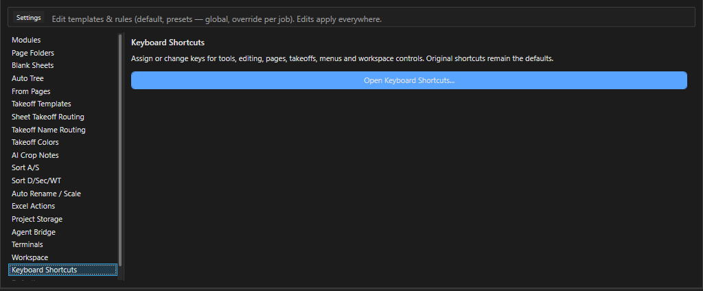
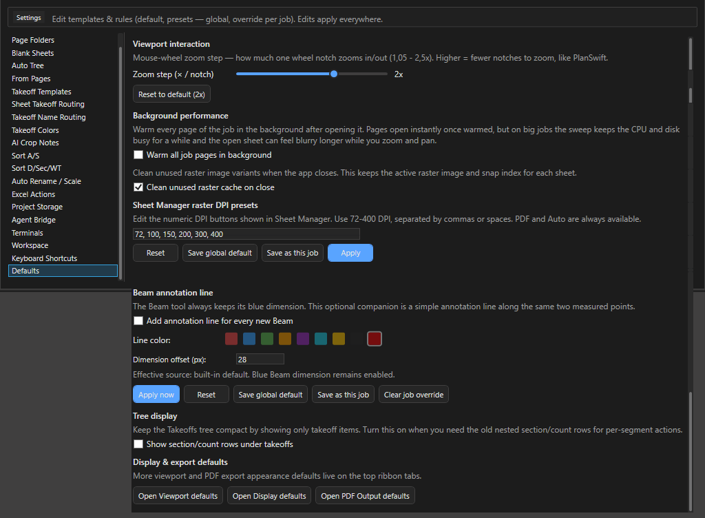
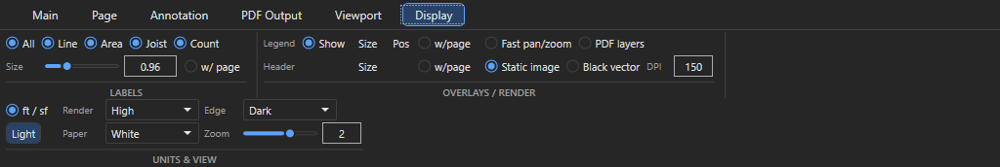

Settings: 20 категорий¶
Здесь - что лежит в каждой категории вкладки Settings OurPlanCore 3.0 и когда туда стоит заходить. Нужно, когда правило программы (папка, имя, цвет, размер листа, клавиша) не совпадает с вашей практикой: почти всё, что раньше было зашито в код, теперь правится здесь.

Принцип: черновик, глобально, для проекта¶
Почти в каждой категории внизу пять кнопок:
| Кнопка | Что делает |
|---|---|
Apply |
применить черновик сейчас, до перезапуска программы; на диск не пишется |
Reset |
вернуть в черновик встроенные значения (то, как программа вела себя до правок) |
Save global default |
записать для всех проектов |
Save as this job |
записать только для открытого проекта (override) |
Clear job override |
убрать проектную копию, снова действует глобальная |
Проектные копии лежат внутри проекта в AI_Context/settings/*.json, глобальные - в профиле программы (%LOCALAPPDATA%\OurPlanCore\presets). Правило: меняете под один проект - Save as this job; меняете навсегда - Save global default; сломали - Reset и Save.
Как изменить правило только для одного проекта¶
Зачем: нестандартный проект (шестой этаж, другие папки) не ломает правила остальных работ.
- Откройте вкладку Settings и нужную категорию в списке слева.
- Поправьте поля или строки таблицы в черновике.
- Нажмите Apply и проверьте поведение в Main View.
- Нажмите Save as this job.
Результат: статус категории говорит Using this job's override; остальные проекты живут по глобальному правилу. Clear job override возвращает проект к глобальному, Reset и Save global default меняют встроенное для всех.
Карта категорий¶

| Категория | Что настраивает | Когда трогать | Подробно |
|---|---|---|---|
| Modules | 19 модулей и команда Job Tracker | нет вкладки или кнопки; включить Sheet Manager, 3D, AI | Модули, Дополнительные возможности |
| Page Folders | стандартные папки Pages для шаблонов Auto / COM / EWP | другой состав папок 00. imported |
Pages |
| Blank Sheets | размер по умолчанию и пресеты бумаги | часто нужен другой формат пустого листа | Пустые листы |
| Auto Tree | дерево Takeoffs, которое строит More > Auto Tree |
свой канон папок | Дерево Takeoffs |
| From Pages | дерево из структуры листов | редко | Дерево Takeoffs |
| Takeoff Templates | сохранённые заготовки деревьев и позиций | повторяющиеся наборы позиций | Прочее, Templates |
| Sheet Takeoff Routing | точки W/F/S/U, уровни, папки по инструментам, авто-точка по имени | takeoff ложится не в ту папку | Маршрутизация |
| Takeoff Name Routing | правила имя или инструмент, потом папка | eve, rake, prpt, Openings в своих папках | Маршрутизация |
| Takeoff Colors | фиксированный цвет для точного имени (bft) |
нужен ещё один фиксированный цвет | Маршрутизация |
| AI Crop Notes | формат строк Tag/Size в заметках из AI crop | заметки из schedule читаются плохо | ИИ |
| Sort A/S | правила Sort: A - Arch / S - Struct, листы на - в --------others |
нестандартные префиксы листов | Pages |
| Sort D/Sec/WT | суффикс имени листа, потом папка (sections, details, rcp) |
новые типы листов | Pages |
| Auto Rename / Scale | движок имён и масштаба, правила суффиксов, колонка Kept, AI по штампу | Name даёт плохие имена | Pages, ИИ |
| Excel Actions | кнопки полосы XL и последовательность ALL | свой порядок шагов экспорта | Excel |
| Project Storage | размер проекта, Preview safe compact, Compact snap.json |
проект раздулся | Проекты и сохранение |
| Agent Bridge | доступ локального ассистента к открытому проекту | работа с агентом | ИИ |
| Terminals | профиль Claude или Codex, ширина, усилие, контекст | панель >_ |
Консоль ИИ |
| Workspace | сервер, устройство, синхронизация, второй компьютер | работа с двух ПК | Workspace |
| Keyboard Shortcuts | кнопка Open Keyboard Shortcuts... |
переназначить клавишу | Горячие клавиши |
| Defaults | зум колесом, фоновый прогрев, кеш растра, кнопки DPI Sheet Manager, строки секций в дереве, линия Beam, переход к лентам вида | общая настройка под себя | ниже, вид на экране |
Коротко о каждой¶
Modules¶
Галки по 19 модулям в группах Documents, Takeoff, Output, Assistance, Productivity, Integrations; пресеты Current default, All modules on, Takeoff Only, Minimal. Здесь же команда модуля Job Tracker: Executable, Arguments (one per line), Save, Reset. Выключенный модуль прячет свои кнопки и вкладку; клавиша на спрятанную команду не срабатывает. Список модулей - в Workspace и модули.
Page Folders, Auto Tree, From Pages, Takeoff Templates¶

More > Auto Tree. Page Folders, From Pages и Takeoff Templates устроены так же.Четыре редактора шаблонов с переключателем Mode (Auto / COM / EWP). Page Folders - папки, которые создаёт Auto Folders; Auto Tree - папки и позиции для More > Auto Tree (в COM-шаблоне units теперь с подпапками 1st-5th); From Pages - верхние папки дерева из листов; Takeoff Templates - заготовки, которые стыкуются вкладкой Templates под Takeoffs или Pages. Правка сохраняется сразу, глобально или для проекта.
Blank Sheets¶

Размер по умолчанию (36 x 24 in) и таблица пресетов Name, Width (in), Height (in). Порядок: проектная копия, потом глобальная, потом 36 x 24. Пресеты видны в диалоге Blank Sheet и в Crop to Sheet.
Sheet Takeoff Routing, Takeoff Name Routing, Takeoff Colors¶
Три категории одной темы: куда и каким цветом ложится новый takeoff. Полностью разобраны на странице Маршрутизация takeoff.
AI Crop Notes¶
Форматирует ответ AI на кроп таблицы schedule в строки HP1 (2) 2x8. Поля Tag/size separator, предпросмотр (paste the recognized text on the left), галка оригинальных таблиц. Исходный ответ остаётся в AI Inbox.
Sort A/S и Sort D/Sec/WT¶

Sort A/S: таблица Match (sheet prefix / filename keyword) и Target плюс правило Page name ends with "-" в --------others. Sort D/Sec/WT: таблица Suffix и Target folder; суффикс берётся из последнего известного слова имени (a1.20 rcp pr5 даёт rcp); синонимы un/unit, det, sch/sc, sw. Создаются только папки, в которые что-то попадает.
Auto Rename / Scale¶

Движок: Ideal v3 (текущий), Precise v2, Legacy. Таблица правил тегов с колонкой Kept: сколько раз имя с этим тегом оставалось финальным при открытии проектов (обучение, только глобально). Галка чтения штампа моделью AI для листов без текста. Новые правила можно проверить до сохранения: выделите листы в Pages и нажмите Apply selected scope....
Части категории подробно
| Часть | Что в ней |
|---|---|
Deterministic Auto Name / Scale policy |
пресеты Ideal v3 (рекомендуемый), Precise v2, Legacy, Reset; Save Global, Save This Job, Clear Job Override. Apply selected scope... запускает Name+Scale с предпросмотром на выделенных в Pages листах по правилам из черновика, ещё не сохранённым; Force reanalyze selected... то же, но перечитывает листы заново, без кеша прошлого анализа. Edit A/S layout regions... открывает области штампа для OCR (то же, что Crop Hints), Save layouts Global, Reset job layout. Анализ сразу после импорта PDF по умолчанию выключен |
Evidence, confidence, and preservation |
Detector engine; After PDF import: ManualOnly у Ideal v3 (только по кнопке), Preview, AnalyzeOnly, AutoApplyHighConfidence, LegacyAutoApply; пороги Minimum Name confidence, Minimum Suffix confidence, Minimum Scale confidence (Low, Medium, High; у Ideal v3 Medium, Medium, High); галки, откуда брать доказательства (индекс листов, номер и название в штампе, масштаб в штампе, текст листа как слабое доказательство), угадывание масштаба без подписи (выключено), чтение штампа моделью AI; Preserve existing manually reviewed Name, Suffix, Scale не дают перезаписать то, что вы уже проверили; списки тегов с масштабом и без него |
Suffix generation rules (first enabled match wins) |
таблица правил тега: побеждает первая включённая подходящая строка. Колонки On, Rule, Kept, Priority, Evidence, Match, Sheet prefix, Pattern, Keywords (;), Exclude (;), Exclude from, Require flags (;), Min #, Max #, Output suffix, Confidence, Skip scale; кнопки Add, Delete, вверх, вниз, Reset Legacy rules |
| Точные подмены и выученные правила | таблица Exact sheet-label overrides (шаблон имени PDF и номер листа дают готовое имя, тег или масштаб) и Learned rules с областью Global или This job |
Excel Actions¶

Список кнопок полосы XL (Action), последовательность для ALL, галка Insert numeric floor group rows (0-5) before the takeoff rows, слова папок этажей (1, 1st, first). Как пользоваться полосой - Экспорт в Excel.
Project Storage¶

Анализ, где проект занимает место; Preview safe compact показывает, что можно ужать, Compact snap.json делает это атомарно. Новые проекты всегда один файл .ourplan. Разделы отчёта Project format, Current project, Storage breakdown, Safe compact preview, Review-only findings и шаги: Проекты и сохранение, Project Storage.
Agent Bridge, Terminals, Workspace¶
Три категории про ИИ и второй компьютер: ИИ в программе и Workspace. У Workspace настройки хранятся на каждом устройстве отдельно и не имеют проектной копии.
Keyboard Shortcuts¶

Одна кнопка Open Keyboard Shortcuts.... Назначения тоже бывают глобальными и проектными. Полная таблица клавиш и инструкция - Горячие клавиши.
Defaults¶

| Группа | Настройка | По умолчанию |
|---|---|---|
| Viewport interaction | Zoom step (x / notch) - шаг зума колесом, кнопка Reset to default |
2.0 |
| Background performance | Warm all job pages in background |
выключено |
| Background performance | Clean unused raster cache on close |
включено |
Sheet Manager raster DPI presets |
числа кнопок DPI в Sheet Manager через запятую, 72-400, не больше 12; PDF и Auto есть всегда. Кнопки Reset, Save global default, Save as this job, Apply |
72, 100, 150, 200, 300, 400 |
| Beam | Add annotation line for every new Beam, Line color, Dimension offset (px) 0-200 |
линия выключена |
| Tree display | Show section/count rows under takeoffs: строки замеров под позициями в Takeoffs, нужны для действий над отдельным сегментом |
выключено |
Display & export defaults |
кнопки Open Viewport defaults, Open Display defaults, Open PDF Output defaults открывают одноимённую ленту |
- |
Остальные настройки вида и экспорта живут на лентах Viewport, Display и PDF Output: они не категория Settings, но тоже сохраняются (вид на экране).
Вид на экране: ленты Viewport и Display¶

Display: подписи значений, легенда и шапка, рендер листа, единицы, фон вокруг листа и под ним, шаг зума.Эти поля меняют только экран, для всех проектов сразу; вид PDF задаёт лента PDF Output (экспорт PDF). Ползунок сохраняется, когда его отпустили; в поле рядом число вписывается с Enter.
| Лента, группа | Поле (подсказка) | Что делает | По умолчанию |
|---|---|---|---|
| Viewport, LINES & AREA | Line (Line measurement thickness) |
толщина Line-замеров, 0.25-4 | 3 |
| Viewport, LINES & AREA | Point |
размер точек Count, 0.25-4 | 2 |
| Viewport, LINES & AREA | Edge (Area boundary thickness) |
толщина контура Area, 0.25-4 | 0.25 |
| Viewport, LINES & AREA | Fill (Area fill opacity) |
заливка Area, 0-100 % | 28 |
| Display, LABELS | All, Line, Area, Joist, Count |
какие подписи значений видны на замерах | - |
| Display, LABELS | Size (Value label size) |
размер подписей значений, 0.25-3 | около 1 |
| Display, LABELS | w/ page |
выключено: подписи держат размер на экране при зуме; включено: растут и уменьшаются вместе с листом | выключено |
| Display, Legend и Header | Size |
размер легенды и шапки листа: Tiny, XS, Small, Normal, Large, XL, XXL или Custom... (своё число 0.25-3) |
Normal |
| Display, UNITS & VIEW | ft / sf |
футы, кв. футы, штуки; выключено - метры | включено |
| Display, UNITS & VIEW | Render (Viewport PDF render RAM/quality profile) |
Balanced бережёт память, Max чётче при большом зуме и ест больше памяти |
High |
| Display, UNITS & VIEW | Edge (Choose the background around the sheet) |
фон окна вокруг листа: White, Gray, Dark |
Dark |
| Display, UNITS & VIEW | Paper (Choose a softer page background tint) |
подложка листа: White, Soft gray, Medium gray, Dark gray, Warm, Soft green, Black; команда палитры Page Background открывает этот список |
White |
| Display, UNITS & VIEW | Zoom (Mouse-wheel zoom step per notch) |
шаг зума на щелчок колеса, 1.05-2.5; то же, что Zoom step в Defaults |
2 |
Группа OVERLAYS / RENDER (Fast pan/zoom, PDF layers, Static image, Black vector, DPI) отвечает за скорость и чёткость листа: Решение проблем, медленно. Группы LIVE LFT / PITCH, RULER / EXTRA и PDF SNAP ленты Viewport описаны вместе с инструментами (привязки).
Защита от испорченного файла настроек
Если файл назначений клавиш не читается, редактор предлагает Recover settings...: Retry reading, Restore / import... или подтверждённый Reset to original keys. Старые байты сохраняются, обычный Save повреждённый файл не перезаписывает. Для данных проекта аналог - Open / Import > Project Data Recovery....